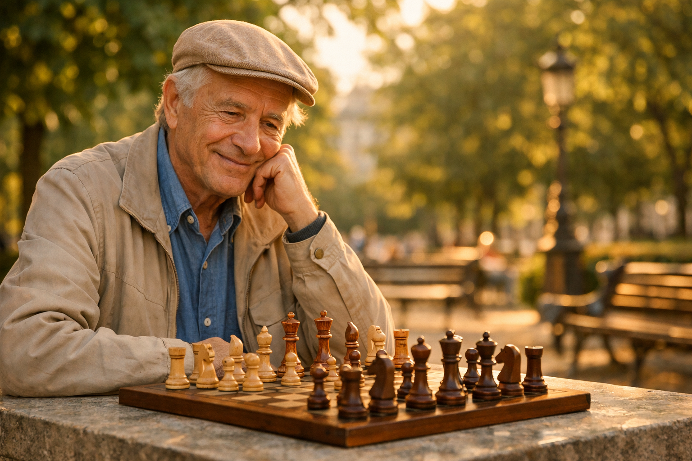

Au sommaire

Pourquoi la retraite est le moment idéal pour les échecs
Soyons honnêtes : pendant la vie active, qui a le temps de s'asseoir devant un échiquier pendant une heure ? Entre le travail, les enfants, les obligations... les échecs restaient souvent un rêve de "quand j'aurai le temps". Eh bien, ce moment est arrivé.
La retraite offre trois ingrédients que les échecs adorent :
- Du temps — enfin la liberté de jouer à votre rythme, sans regarder la montre
- De la disponibilité mentale — le cerveau n'est plus saturé par le stress professionnel
- L'envie d'apprendre — beaucoup de retraités redécouvrent le plaisir pur d'apprendre quelque chose de nouveau
Et contrairement aux sports physiques qui deviennent plus difficiles avec l'âge, les échecs sont un jeu où l'expérience de vie est un avantage. Votre patience, votre capacité d'analyse, votre recul — tout ça, vous l'avez déjà. Un jeune de 20 ans calcule peut-être plus vite, mais vous, vous réfléchissez mieux.
Les 8 bienfaits des échecs pour les seniors
1 Protection de la mémoire (le bienfait n°1)
C'est la question qui revient le plus : "Est-ce que les échecs protègent vraiment la mémoire ?" La réponse courte : oui, et c'est documenté scientifiquement.
Les échecs sollicitent intensément la mémoire de travail. À chaque coup, vous devez :
- Mémoriser la position des pièces
- Vous rappeler les coups précédents
- Anticiper les réponses possibles de l'adversaire
- Reconnaître des schémas déjà vus dans d'autres parties
C'est un entraînement complet pour le cerveau — bien plus exigeant que les mots croisés ou le sudoku.
2 Stimulation cognitive complète
Les échecs ne font pas travailler qu'un seul "muscle" du cerveau. C'est un exercice complet qui mobilise :
- Le raisonnement logique — enchaîner les "si... alors..."
- La vision spatiale — visualiser les diagonales, les colonnes, les lignes
- La planification — construire une stratégie sur 5, 10, 20 coups
- L'attention soutenue — rester concentré pendant toute la partie
- La prise de décision — choisir le meilleur coup parmi des dizaines de possibilités
Aucune autre activité de loisir ne sollicite autant de fonctions cognitives en même temps. C'est pour ça que les neurologues recommandent de plus en plus les échecs aux seniors. Pour aller plus loin sur les études scientifiques, consultez notre analyse des recherches sur échecs et intelligence — les résultats s'appliquent aussi aux adultes.
3 Lien social et lutte contre l'isolement
L'isolement est le fléau silencieux de la retraite. Les collègues disparaissent, la routine se vide, les interactions quotidiennes se raréfient. Les échecs sont un antidote remarquablement efficace.
Quand vous jouez aux échecs, vous ne jouez jamais seul :
- Les clubs — des dizaines de clubs à Paris et en Île-de-France accueillent les débutants
- Les tournois — oui, même à 70 ans, vous pouvez participer (et c'est très convivial)
- Les plateformes en ligne — chess.com et lichess vous connectent à des millions de joueurs
- Les parcs — au Luxembourg, aux Tuileries, on joue encore en plein air
Les échecs créent un langage commun. Vous pouvez jouer avec votre petit-fils de 10 ans ou avec un retraité russe sur internet. L'échiquier abolit toutes les barrières : âge, langue, milieu social.
4 Structure du quotidien
L'un des défis méconnus de la retraite, c'est la perte de structure. Plus d'horaires, plus de routine, plus de raison impérative de se lever le matin. Les échecs apportent naturellement un cadre :
- Un entraînement quotidien (même 20 minutes suffisent)
- Des sessions au club à jours fixes
- Des tournois à préparer
- Des exercices à résoudre
- Des parties en ligne le soir
Ce n'est pas un planning rigide — c'est un fil rouge agréable qui donne du rythme à vos journées.
5 Confiance en soi et sentiment d'accomplissement
Apprendre quelque chose de nouveau à 65 ans, c'est une victoire en soi. Et aux échecs, chaque progrès est mesurable. Votre classement Elo monte, vos tactiques s'améliorent, vous gagnez des parties que vous auriez perdues 3 mois plus tôt.
Ce sentiment de progression continue est puissant. Il combat directement le "je suis trop vieux pour..." qui s'installe parfois à la retraite. Pour comprendre le rythme de progression réaliste, consultez notre guide combien de temps pour devenir bon aux échecs.
6 Gestion du stress et bien-être mental
Paradoxe apparent : un jeu qui demande une concentration intense... qui détend. Mais c'est exactement ce qui se passe. Quand vous êtes plongé dans une partie d'échecs, vous ne pensez à rien d'autre. Pas aux soucis de santé, pas aux factures, pas aux informations anxiogènes.
Les psychologues appellent ça le flow — cet état de concentration totale où le temps semble s'arrêter. Les échecs sont l'une des activités les plus propices à cet état. Et les bénéfices sur l'anxiété et le bien-être général sont documentés.
7 Relation intergénérationnelle
Voici un bienfait que personne ne mentionne assez : les échecs sont le meilleur pont entre les générations.
Imaginez la scène : vous êtes assis face à votre petit-fils de 8 ans, chacun réfléchit à son prochain coup, et pendant 30 minutes, vous êtes à égalité. Pas de "grand-père qui sait mieux", pas de téléphone, pas de distraction. Juste deux esprits qui se confrontent avec respect.
C'est un cadeau que peu d'activités peuvent offrir. Les échecs permettent de développer les capacités de l'enfant tout en nourrissant le lien affectif avec les grands-parents.
8 Accessibilité totale
Dernier bienfait, et pas des moindres : les échecs sont accessibles à absolument tout le monde :
- Aucune condition physique requise — mobilité réduite, fauteuil roulant, aucune importance
- Coût quasi nul — un échiquier coûte 20€, les plateformes en ligne sont gratuites
- Jouable partout — chez vous, au parc, en voyage, à l'hôpital
- Aucun équipement spécial — un échiquier et un adversaire, c'est tout
- Pas de météo — pluie, canicule, vous jouez quand même
Comparez avec le tennis, la randonnée ou le golf. Les échecs n'ont aucune barrière d'entrée physique. C'est l'activité la plus démocratique qui existe.
Envie de tester les échecs à la retraite ?
Je propose un premier cours gratuit et sans engagement. On fait connaissance, je teste votre niveau (même si vous n'avez jamais joué !), et on voit ensemble si ça vous plaît.
Réserver mon cours d'essai gratuitComment débuter les échecs à 60, 65 ou 70 ans
Vous êtes convaincu ? Parfait. Voici le plan concret que je recommande à mes élèves seniors. Pas de pression, pas de compétition — juste du plaisir et de la progression.
🎯 Semaine 1-2 : Les fondamentaux
Avant tout, apprendre les règles. Ce n'est pas aussi compliqué qu'on le croit : en 2-3 séances, c'est réglé. Si vous partez de zéro, notre guide complet des règles des échecs vous explique tout en 15 minutes.
- Comment chaque pièce se déplace
- Le roque, la prise en passant, la promotion
- L'échec et le mat
- Les bases de la notation (pour noter vos parties)
📅 Mois 1-3 : La routine quotidienne
L'erreur classique, c'est de vouloir jouer des parties tout de suite. La tactique d'abord. 80% des parties entre débutants se gagnent sur des coups tactiques simples (fourchettes, clouages, enfilades).
Une routine idéale pour un retraité débutant :
- 15 minutes de problèmes tactiques sur lichess (gratuit)
- 1 partie lente par jour (10 minutes minimum par joueur)
- 5 minutes d'analyse après chaque partie (qu'est-ce que j'ai raté ?)
C'est 30-40 minutes par jour. Largement faisable à la retraite. Et si un jour vous n'avez pas envie, vous ne jouez pas. Pas de stress.
📈 Mois 3-6 : La progression visible
C'est là que la magie opère. Après 3 mois de pratique régulière, vous allez :
- Gagner des parties contre d'autres débutants
- Voir des combinaisons que vous ne voyiez pas avant
- Avoir un classement Elo qui monte
- Commencer à comprendre les ouvertures
C'est le moment où la plupart de mes élèves seniors disent : "Pourquoi est-ce que je n'ai pas commencé plus tôt ?"
🎓 L'option professeur
Faut-il prendre un professeur ? Pas obligatoirement, mais c'est un accélérateur considérable. Un bon prof vous fait gagner 6 mois à 1 an de progression par rapport à l'autodidacte. Il corrige vos erreurs avant qu'elles ne deviennent des habitudes.
Pour une comparaison détaillée des deux approches, lisez notre article professeur ou autodidacte aux échecs. Et si vous hésitez entre cours en ligne et à domicile, notre comparatif en ligne vs présentiel vous aidera à choisir.
Où jouer aux échecs quand on est retraité
En club
La Fédération Française des Échecs (FFE) compte plus de 900 clubs en France. La plupart accueillent les débutants adultes avec plaisir. L'ambiance est conviviale, les cotisations modestes (souvent 50-100€ par an).
À Paris, vous avez l'embarras du choix : le Cercle d'Échecs de Caïssa Paris, l'Échiquier du Marais, le club de Vincennes... Renseignez-vous sur le site de la FFE pour trouver le club le plus proche.
En ligne
Deux plateformes dominent :
- Lichess.org — 100% gratuit, interface simple, idéal pour les seniors qui débutent en numérique
- Chess.com — plus riche en contenu pédagogique, version gratuite suffisante pour commencer
L'avantage en ligne : vous trouvez un adversaire en 10 secondes, à n'importe quelle heure. Parfait pour une partie après le dîner ou pendant la sieste des petits-enfants.
En plein air
À Paris, le Jardin du Luxembourg est célèbre pour ses joueurs d'échecs en plein air. Les Tuileries, le Parc Montsouris, le Square du Temple... Il suffit de s'asseoir avec un échiquier et quelqu'un viendra vous défier.
À domicile (cours particulier)
C'est l'option la plus confortable pour les seniors : un professeur vient chez vous, à votre rythme, dans votre salon. Pas de déplacement, pas de stress. Le cours est entièrement adapté à vos besoins et à votre progression.
Questions fréquentes des seniors débutants
"Je n'ai jamais joué de ma vie, c'est vraiment possible à mon âge ?"
Oui, absolument. Je forme des débutants complets de 60 à 80 ans. Le cerveau humain reste capable d'apprendre de nouvelles compétences toute la vie — c'est ce qu'on appelle la neuroplasticité. Vous apprendrez peut-être un peu plus lentement qu'un enfant de 10 ans, mais vous compenserez largement par votre patience et votre motivation. Pour des conseils concrets adaptés aux adultes, notre guide apprendre les échecs à 30, 40, 50 ans s'applique tout aussi bien à 60 ou 70 ans.
"J'ai des problèmes de vue / d'arthrose. C'est un obstacle ?"
Rarement un vrai obstacle. Il existe des échiquiers à grandes pièces (pièces de 10-12 cm), des échiquiers muraux pour les clubs, et les plateformes en ligne permettent de zoomer autant que nécessaire. Pour l'arthrose des mains, les pièces magnétiques sont idéales : un simple effleurement suffit pour déplacer la pièce.
"Combien ça coûte ?"
Presque rien si vous voulez :
- Gratuit : lichess.org + tutoriels YouTube
- 20-40€ : un bon échiquier physique pour jouer chez vous
- 50-100€/an : cotisation club (2 à 3 séances par semaine incluses)
- 40-50€/h : cours particulier avec un professeur
"Est-ce que c'est bon pour Alzheimer ?"
Les échecs ne guérissent pas Alzheimer — soyons clairs. En revanche, la pratique régulière des jeux de stratégie fait partie des activités les plus recommandées pour retarder le déclin cognitif et réduire le risque de développer des maladies neurodégénératives. C'est de la prévention, pas un traitement.
"Mon conjoint / ma conjointe ne joue pas. C'est un problème ?"
Pas du tout. La majorité de mes élèves seniors jouent sans leur conjoint. Les plateformes en ligne, les clubs, les cours — vous trouverez toujours un partenaire de jeu. Et qui sait, peut-être que votre conjoint(e) finira par s'y mettre en vous voyant prendre du plaisir !
Verdict : faut-il se lancer ?
Si vous êtes arrivé jusqu'ici, vous avez probablement déjà votre réponse. Les échecs à la retraite, ce n'est pas "un truc pour tuer le temps". C'est :
- Un entraînement cérébral de premier ordre, validé scientifiquement
- Un lien social puissant contre l'isolement
- Une source de plaisir et de fierté personnelle
- Une activité accessible à tous, sans condition physique
- Un pont entre les générations — jouez avec vos petits-enfants
Le seul regret que j'entends chez mes élèves seniors ? "J'aurais dû commencer plus tôt."
Alors n'attendez pas. Que vous ayez 60, 70 ou 80 ans, il n'est jamais trop tard. Le meilleur moment pour planter un arbre, c'était il y a 20 ans. Le deuxième meilleur moment, c'est maintenant. Et aux échecs, c'est pareil.
Vous êtes à Paris, Versailles ou ailleurs ?
Je propose des cours d'échecs à domicile à Paris et Versailles (50€/h), ou en visio partout en France (40€/h), spécialement adaptés aux seniors. Rythme tranquille, pédagogie patiente, et premier cours offert pour tester sans engagement.
Discutons de votre projetArticle recommandé
Vous hésitez encore ? Cet article répond à toutes les questions des adultes qui débutent :
Apprendre les Échecs à 30, 40, 50 Ans : Trop Tard ? Guide complet pour adultes débutants : méthode, temps nécessaire, premiers pas →
Article rédigé par Nicolas Musicki, professeur d'échecs à Paris et Versailles
Retour à l'accueil |
Me contacter